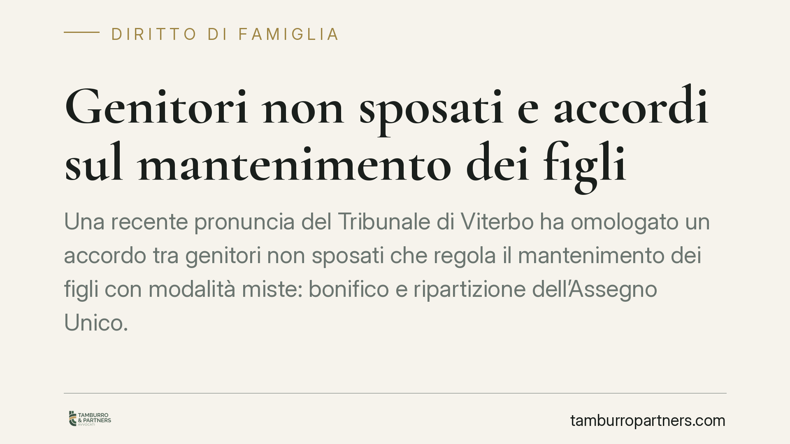

Genitori non sposati e accordi sul mantenimento dei figli
Una recente pronuncia del Tribunale di Viterbo ha omologato un accordo tra genitori non sposati che regola il mantenimento dei figli con modalità miste: bonifico e ripartizione dell'Assegno Unico. La decisione conferma l'ampia autonomia riconosciuta ai genitori, purché l'intesa rispetti l'interesse dei minori. Vediamo cosa dice la legge e cosa serve per un accordo valido.

Il caso in sintesi
Una recente pronuncia del Tribunale di Viterbo (i cui estremi esatti sono in corso di verifica e vanno confermati prima di ogni utilizzo argomentativo) ha omologato un accordo sul mantenimento raggiunto da due genitori non coniugati.
L'intesa prevedeva una struttura mista: una parte del contributo versata con bonifico periodico dal genitore non collocatario, e una parte gestita tramite la ripartizione dell'Assegno Unico e Universale (AUU).
Il Tribunale ha ritenuto l'accordo conforme all'interesse dei figli e lo ha recepito. È un caso utile per chiarire alcuni punti che generano frequenti dubbi.
Inquadramento normativo
Prima di tutto un dato fermo: gli obblighi di mantenimento verso i figli sono identici, che i genitori siano sposati o meno. L'art. 315 del codice civile equipara i figli nati fuori dal matrimonio a quelli nati nel matrimonio. Non esistono figli di serie A o di serie B, e questo vale anche per i doveri economici dei genitori.
Sul piano processuale, il riferimento è l'art. 473-bis.51 del codice di procedura civile, introdotto dalla riforma Cartabia. La norma disciplina i procedimenti su domanda congiunta: quando i genitori presentano un accordo, il tribunale verifica che le condizioni relative ai figli rispondano al loro interesse. In caso positivo, recepisce l'intesa.
Due precisazioni importanti. Il Pubblico Ministero interviene nei procedimenti che riguardano minori: il suo parere è un passaggio a tutela dell'interesse dei figli. E il potere del giudice non è meramente notarile: se l'accordo appare contrario all'interesse dei minori, il tribunale può indicare le modifiche opportune o, in mancanza, rigettare la domanda.
L'Assegno Unico: come funziona davvero
Sul meccanismo dell'AUU serve rigore, per evitare aspettative sbagliate.
L'Assegno Unico e Universale è disciplinato dal D.Lgs. 230/2021. L'INPS lo eroga su domanda: in presenza di genitori separati o non conviventi, l'importo è di norma ripartito in due quote pari al 50%, salvo diverso accordo tra i genitori comunicato all'Istituto, oppure erogato per intero al genitore richiedente secondo le regole operative INPS.
Quando in un accordo si parla di "destinare la quota dell'AUU al mantenimento", si intende quindi una ripartizione o una gestione concordata di somme che l'INPS già eroga secondo proprie modalità. Non è la creazione di un flusso nuovo, ma l'organizzazione di risorse esistenti. Questo aspetto va tradotto correttamente nell'accordo e coordinato con le procedure dell'Istituto, altrimenti si rischia uno scollamento tra ciò che è scritto e ciò che l'INPS eroga in concreto.
Cosa significa in pratica
La pronuncia conferma un orientamento favorevole all'autonomia dei genitori nel modellare il contributo economico ai figli. Le forme possono essere flessibili: versamenti diretti, contribuzione a spese specifiche, gestione condivisa dell'AUU.
Il limite resta però netto e non negoziabile: l'interesse del minore. Un accordo che, pur comodo per gli adulti, riduca in modo ingiustificato le risorse destinate ai figli non supera il vaglio del tribunale.
Attenzione a non sovrastimare la portata di una singola decisione di merito, peraltro non definitiva: indica una direzione, non fissa una regola generale vincolante.
Cosa fare in concreto
- Quantificate prima le esigenze del figlio, poi costruite l'accordo: partite dai bisogni concreti del minore, non dalla convenienza reciproca.
- Scrivete in modo chiaro la parte in denaro: importo, cadenza, modalità di versamento e criteri di aggiornamento nel tempo.
- Coordinate l'AUU con l'INPS: verificate a chi è intestata la domanda, come è ripartito l'assegno e comunicate all'Istituto ogni intesa sulla ripartizione delle quote.
- Disciplinate le spese straordinarie a parte (mediche, scolastiche, sportive), indicando percentuali e modalità di rendicontazione.
- Fatevi assistere per l'omologazione: un accordo mal formulato rischia il rigetto o crea contenzioso futuro sull'esecuzione.
In conclusione
Genitori sposati e non sposati hanno gli stessi doveri verso i figli e, oggi, ampi margini per organizzarne il mantenimento con soluzioni su misura. La flessibilità è un'opportunità, ma richiede precisione tecnica: sull'interesse del minore e sul coordinamento con le regole INPS non si improvvisa.
---
*Contributo informativo a cura di Tamburro & Partners - Avv. Giuseppe Tamburro. Non costituisce parere legale.*
Ogni famiglia ha il suo equilibrio.
Separazione, divorzio, affidamento, assegno: se vuoi un confronto riservato su una specifica situazione, scrivi allo studio. Ti rispondiamo entro un giorno lavorativo.